أغلفة وصناديق تُصنع معًا
كل طبعة يمكن أن تغادر ورشتنا قطعةً متكاملة، الغلاف والعلبة والداخل على معيار واحد.
أغلفة من الجلد الطبيعي والجلد الحراري
من المجلد الواحد إلى الأعمال الكاملة متعددة المجلدات، بجلد العجل أو الجلد الحراري، مع نقش عميق وتذهيب ساخن وحواف مذهّبة.
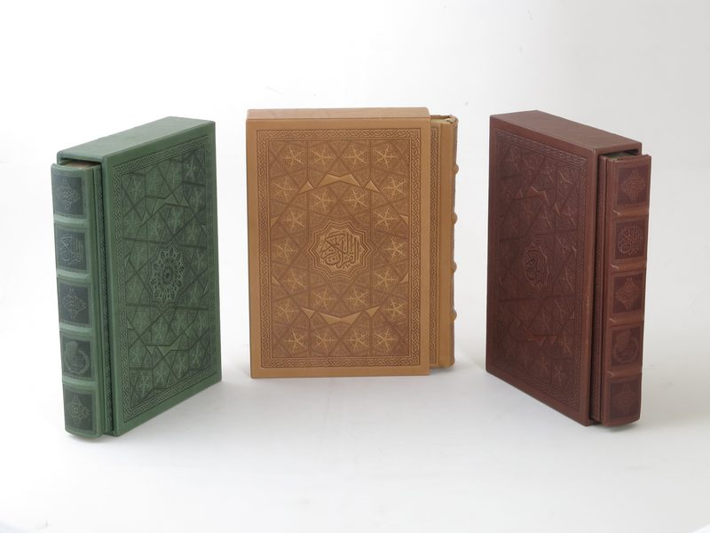
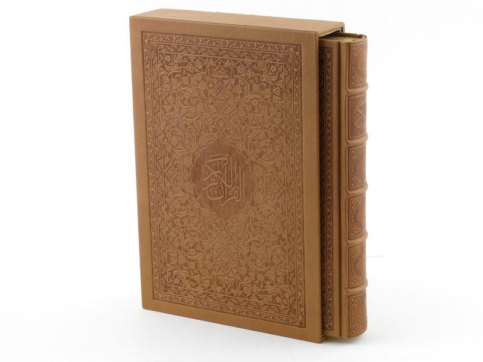
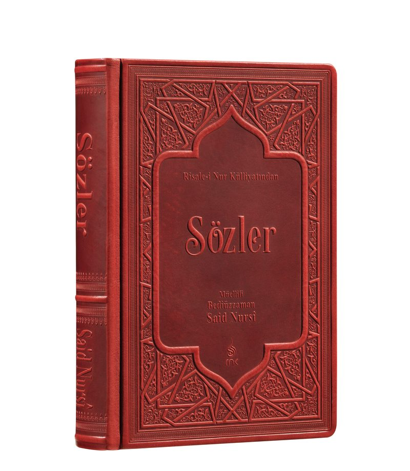
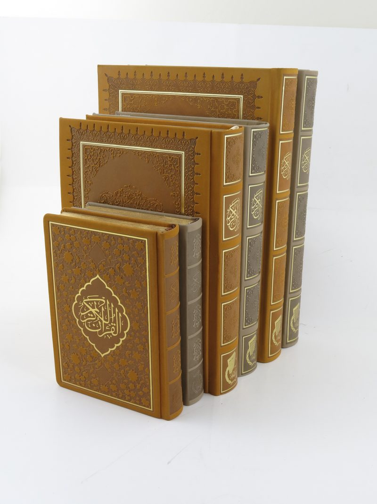
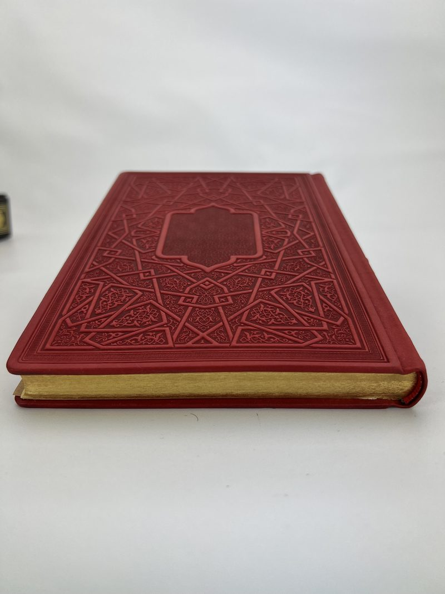
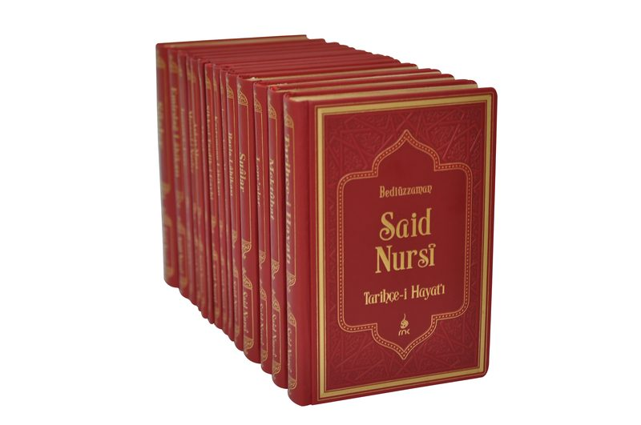

تجليد ربع جلد
الكعب من الجلد الطبيعي، والأغلفة من قماش التجليد.
يؤدي الجلد وظيفته في الجزء الأكثر عرضة للاستخدام في التجليد، وهو الكعب؛ بينما يقاوم القماش التآكل على الأسطح الواسعة.
خيار متوازن طويل العمر للأعمال الكاملة والمجموعات متعددة المجلدات. وتُطبع الرقاقة والنقش في ورشتنا كما في أغلفتنا الجلدية الكاملة.
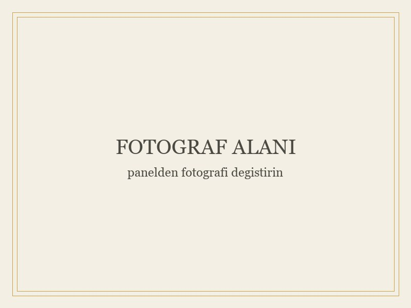
أغلفة وصناديق لطبعات الفاكسيميلي
الطبعة الفاكسيميلية لمخطوطٍ ما تستحق تجليدًا وفيًّا للأصل. أنتجنا أغلفة وصناديق تقديم لمشاريع الفاكسيميلي لدى مؤسسة المخطوطات التركية، ونقدّم العناية نفسها لناشري الفاكسيميلي في أوروبا.
اختيار جلدٍ يلائم الحقبة، ونقشٌ وتذهيبٌ مضبوطان على زخرفة الأصل، وصناديق واقية تصلح للتداول الأرشيفي. كل عنصر يُطوَّر بالمقارنة مع العمل المصدر.
لكل طبعة علبتها المطابقة
كل طبعة يمكن أن تُشحن مع علبتها الواقية أو صندوقها الصدفي المطابق: هيكل MDF مقصوص بالليزر، تغليف يدوي، دواخل من المخمل أو الشامواه، أغطية مغناطيسية أو مفصلية، ولوحات أسماء مخصصة.
مورّد واحد، معيار محاذاة واحد، شحنة واحدة.
ناقش طبعتك معنا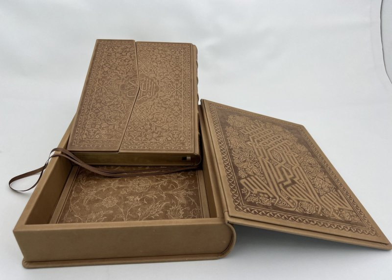
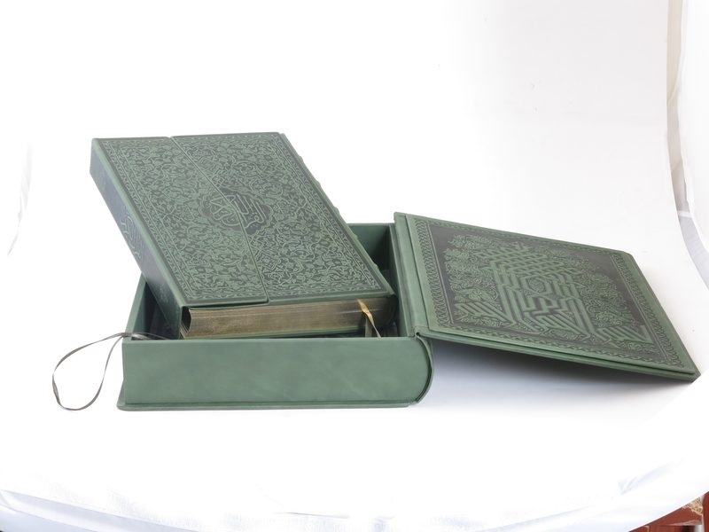
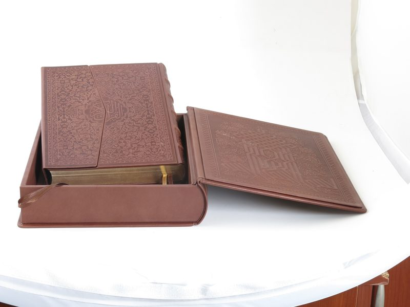
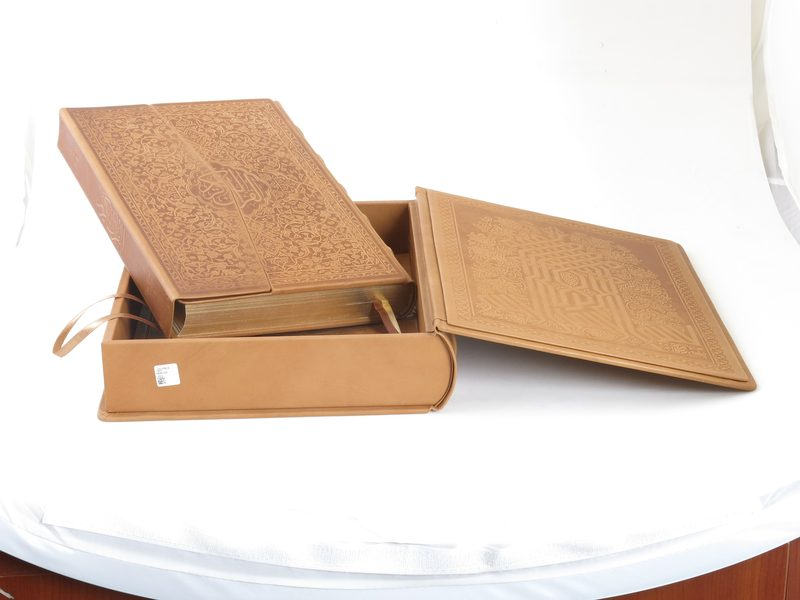
نظرة أقرب
انقر أي صورة للتكبير.
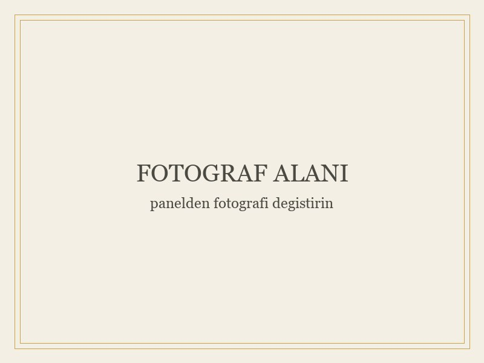
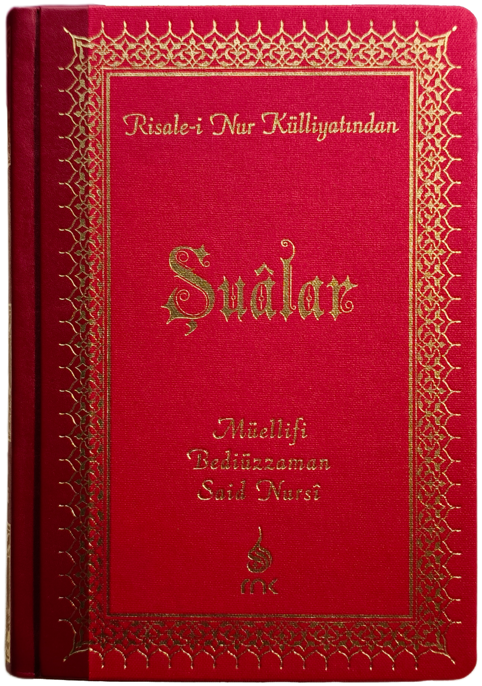
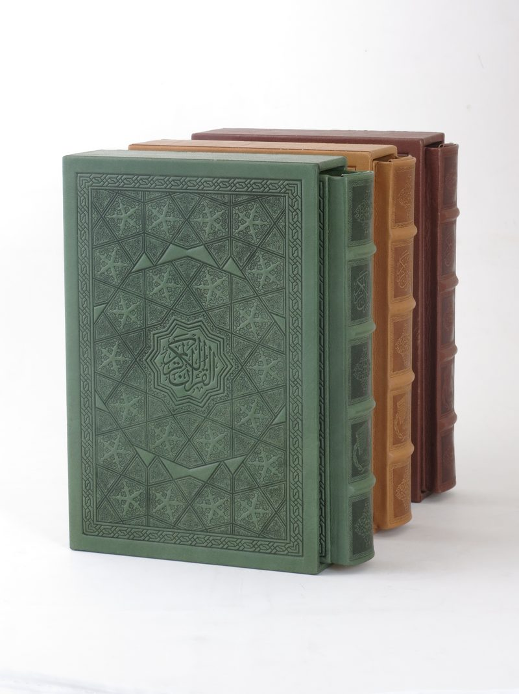
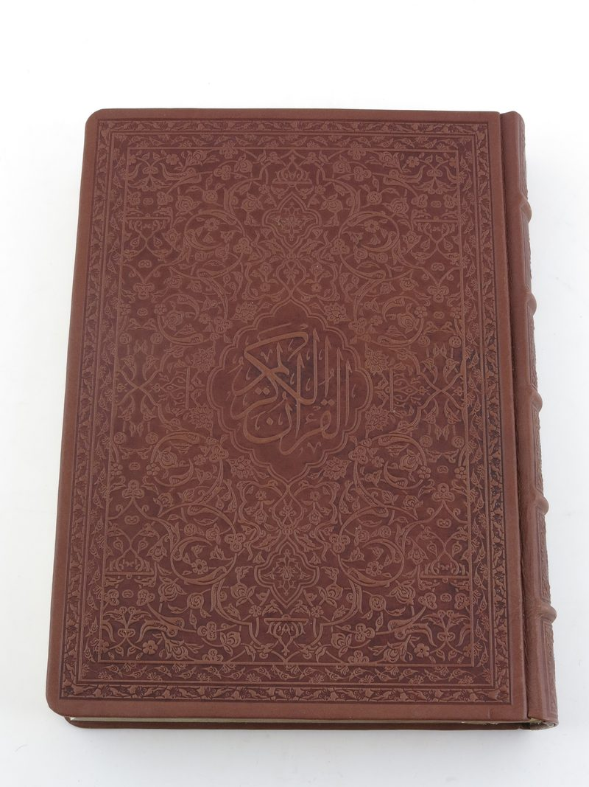
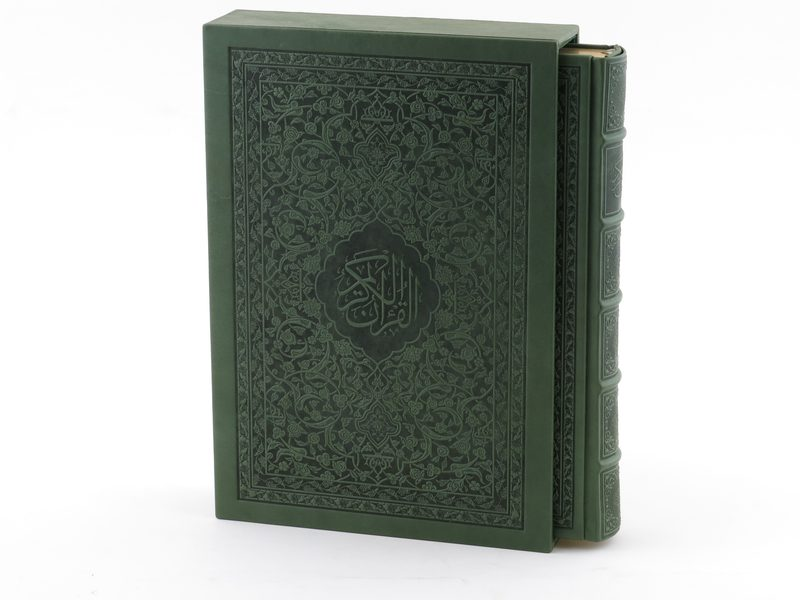
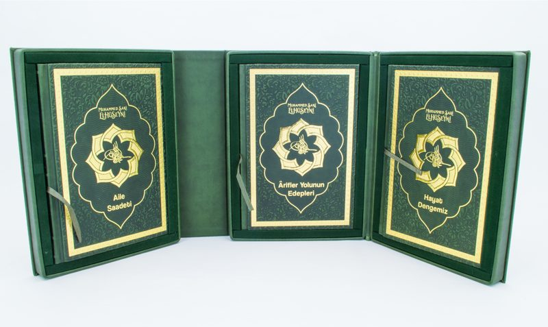
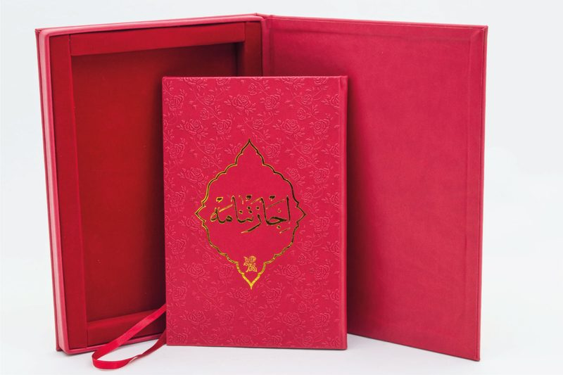

تخطط لطبعة؟
أرسل لنا المقاس والكميات؛ نرسل إليك طقم عينات مجانيًا وعرض سعر.